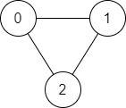
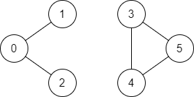

| Category | Difficulty | Likes | Dislikes |
|---|---|---|---|
| Algorithms | Easy | 4229 | 247 |
depth-first-search | breadth-first-search | union-find | graph
microsoft | google | bloomberg | amazon | facebook
There is a bi-directional graph with n vertices, where each vertex is labeled from 0 to n - 1 (inclusive). The edges in the graph are represented as a 2D integer array edges, where each edges[i] = [ui, vi] denotes a bi-directional edge between vertex ui and vertex vi. Every vertex pair is connected by at most one edge, and no vertex has an edge to itself.
You want to determine if there is a valid path that exists from vertex source to vertex destination.
Given edges and the integers n, source, and destination, return true if there is a valid path from source to destination, or false otherwise.
Example 1:

Input: n = 3, edges = [[0,1],[1,2],[2,0]], source = 0, destination = 2
Output: true
Explanation: There are two paths from vertex 0 to vertex 2:
- 0 → 1 → 2
- 0 → 2Example 2:

Input: n = 6, edges = [[0,1],[0,2],[3,5],[5,4],[4,3]], source = 0, destination = 5
Output: false
Explanation: There is no path from vertex 0 to vertex 5.
Constraints:
1 <= n <= 2 * 1050 <= edges.length <= 2 * 105edges[i].length == 20 <= ui, vi <= n - 1ui != vi0 <= source, destination <= n - 1